CSS
Author: David Washington (@dwcares)

What is CSS?
Cascading Style Sheets (CSS) are how you style your HTML for presentation. It's both a language and a set of capabilities that allow you to make things look the way you want them do. While most you can accomplish most web styling techniques directly in JavaScript, CSS is structured in a way that helps isolate themes, styles, and even layout from your JavaScript code (behavior) and HTML document (content). It's structured in a way that allows you to conditionally style the elements in your document in a intuitive and logical way, while providing simple techniques for building styles that can work on multiple pages.
CSS Basics
The way CSS works is you use selectors to select elements in the DOM and apply properties. Each selector can define multiple properties. Child elements inherit properties from their parents, unless overridden by other styles.
CSS Examples
To start off, here's a few examples of setting a few properties using different selectors.
Set a property
Set the width of the
<body>element to 100%.
Element type selector
Give all images a 2-pixel white border around all image.
Set multiple properties
Set the background color and border for a specific element with
id=someElement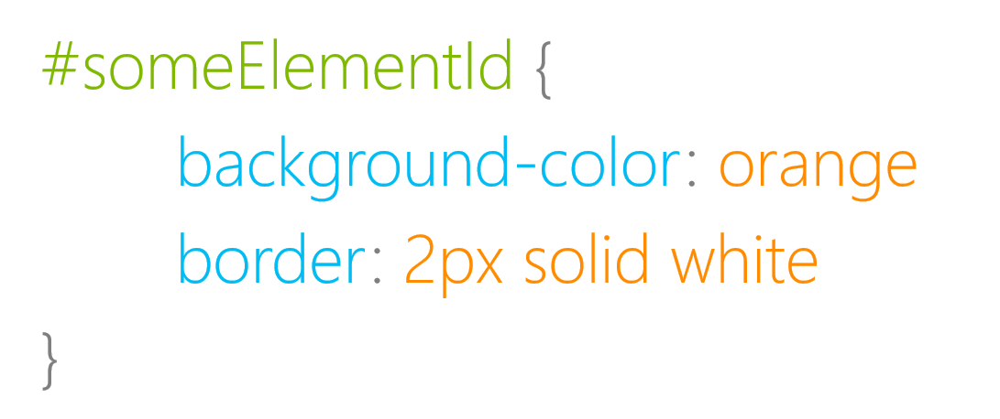
What are CSS properties
Properties are the individual styles that you set on elements. This could be basics like size, color, and font, or more advanced like layout, transitions, and animations.
div {
background-color: blue;
width: 500px;
display: none;
}
What are CSS selectors
Selectors are how you reference elements in your document. These can be as specific as an individual element referenced by ID, a class which can apply to multiple elements, or an element type which can apply to all elements of that type.
/* Select by type */
div { color: blue }
/* Select by class */
.someClass { color: blue }
/* Select by ID */
#someElement { color: blue }
Specific selectors
Selectors can be combined or used in a way to select a specific set of elements. Make all the buttons with the someClass class blue
button.someClass {
background-color: blue;
}
Descendent selectors
Descendent selectors all you to grab all the child elements that match a selection. This example gives all the images that are descendants of .someClass have a blue border.
.someClass img {
border: 2px blue solid;
}
Grouped selectors
There's a nice shortcut to group selectors if you want to apply the same property to them. This example makes all link, div, and span elements have blue text.
a, div, span {
color: blue;
}
What is a pseudo-class
Pseudo-classes allow you to reference an element while it is in a specific state. For example, this is how you change color when someone hovers or clicks on a button.
button:hover {
background-color: yellow;
}
button:active {
background-color: cyan;
}
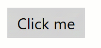
What is a pseudo-element
Pseudo-elements all you to select and style parts of an individual element. They are commonly used for adding typographic effects, styling custom controls, or for element adornment.
Creating a custom blockquote style that adds a dropcap and prefixed quotes is simple with pseudo-elements.
blockquote::first-letter {
font-size : 40pt;
color: magenta;
}
blockquote::before {
content : open-quote;
}
blockquote::after{
content : close-quote;
}
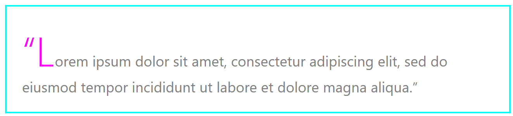
Where can CSS live?
Styles can live in multiple places, from a separate .css file, to embedded in the head of an HTML file, to defining the styles inline on HTML elements.
In a CSS file (.css)
Defining styles in a separate file is ideal because it improves readability and allows styles to be applied to multiple pages. Also, multiple stylesheet files can be applied to a single document.
<!-- default.html -->
<head>
<link rel="stylesheet" type="text/css" href="default.css">
</head>
/* default.css */
body {
width: 100%;
}
Embedded in an HTML file
Styles can also be defined in the <head> tag at the top of an HTML file.
<!-- default.html -->
<head>
<style>
body {
width: 100%;
}
</style>
</head>
<body>
hello world.
</body>
Inline CSS
Finally, styles can be set directly on an individual element by using the style attribute on it. Properties can be set directly without the selector.
<body style="width:100%;">hello world.</body>
Note: Many styles can also be set at runtime from JavaScript. This doesn't use CSS syntax but, in most cases, apply the same styles. Example:
document.body.style.width = 50;
CSS Specificity
Cascading style sheets can be set in multiple ways and places, so what happens if two conflicting styles are set? In the below example, what color would the button be? which selector gets priority?
<!-- default.html -->
<button id="foo">Click me</button>
/* foo.css */
button {
background-color: blue;
}
#foo {
background-color: red;
}
Selector priority
CSS has a priority that is used to determine which styles are used.
- ID Selector - E.g.
#example - Class selector - E.g.
.example - Type selector - E.g.
h1
Specificity scoring
While working with individual selectors is easy to think about as priority, but because selectors can be combined to more specifically grab a set of elements, CSS has a scoring ruberick you can use to determine which selector will win through calculation.
If you think of each type of selector as a different order of magnitude in the number system, when you combine them, you can determine the total score.
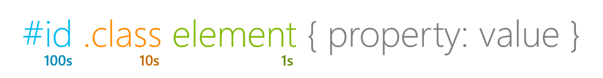
/* Score: 0,0,1 */
button {
background-color: blue;
}
/* Score: 0,1,0 */
.toolbar {
background-color: magenta;
}
/* Score: 0,1,1 */
button.toolbar {
background-color: grey;
}
/* Score: 1,1,0 */
#printButton.toolbar {
background-color: yellow;
}
Note: Styles that are set directly in JavaScript take priority over cascaded styles
Using !important
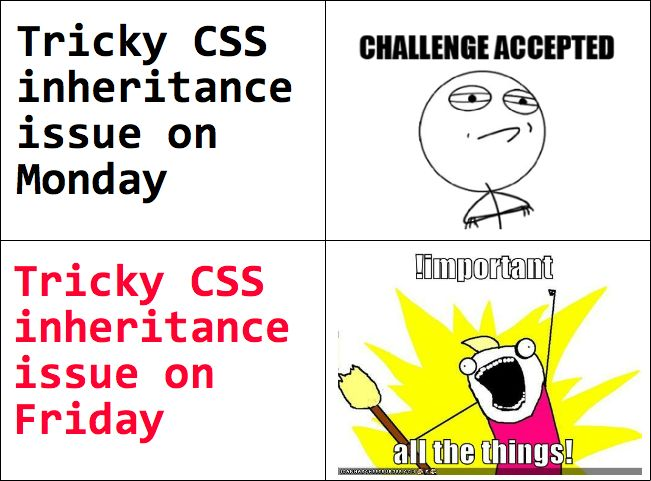
CSS provides a way to override specificity priority by using !important. While powerful, usually it is preferred to use the default priority, or using a more specific selector.
button {
background-color: blue !important;
}
#foo {
background-color: red;
}
In this case the button will be blue and override the default priority
While in general you should avoid using !important to solve annoying specificity issues, it is a useful tool if you're creating a utility class where you're trying to style a bunch of elements on your site the same way (e.g. rounded corners for all buttons). Since classes are relatively low specificity score, your styles could be easily overwritten by other styles. Using !important can solve for that.
Common Styling Techniques
CSS has a broad and powerful set of capabilities, and we won't cover them all here, but here are a few common uses.
Color
Color is a common property that set for backgrounds, text, and borders. CSS provides a we handy ways to set the exact color for your theme.
/* There are 140 CSS color names supported by modern browsers */
h1.title {
color: magenta;
background-color: cyan;
border-color: linen;
}
/* Colors can be set with hexadecimal syntax */
.toolbar button {
background-color: #00FFFF;
}
/* Colors can be set with rgb or rbga syntax */
.content div {
color: rgb(13,13,13);
background-color: rgba(121,208,121, 0.2);
}
Protip: Visual Studio Code has inline support for CSS colors. When you specify a color, it gives you a little swatch you can hover on, and it will pop up a color picker you can use to choose the exact color. 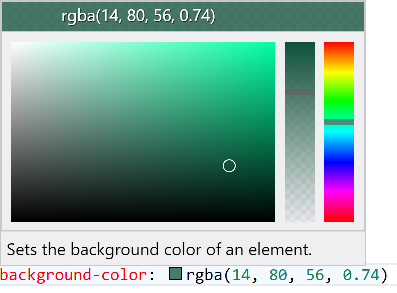
Border-radius
Setting borders can be useful to defining style, and the border tools expand beyond defining the border themselves, and can change the shape of the object.
Rounded Corners
One example of a specific border property is border-radius which you can use to round corners.
div {
background-color: lightblue;
width: 200px;
height: 200px;
border-radius: 50px;
}
Perfect Circle
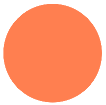
A common scenario is to draw a perfect circle in css, this can also be accomplished with border-radius that matches the radius of your circle.
div {
background-color: coral;
width: 200px;
height: 200px;
border-radius: 100px;
}
Backgrounds
Another common scenario is to set the background of an element or page with a color, pattern, or image. CSS provides several techniques for accomplishing this.
Gradient
div {
background: linear-gradient(to right, magenta, cyan, gold);
}
Crop and fit a background image
div {
background-image: url("mountains.jpg");
background-size: cover;
}
Scale to fit a background image
div {
background-image: url("mountains.jpg");
background-size: contain;
background-position: center;
background-repeat: no-repeat;
}
Layout
Layout is one of the more complex concepts in CSS because it involves a delicate dance between you describing how you want the page to behave, along with the browser calculating the actual sizes and positions of the elements on the page.
Furthermore, there is consideration for your page layout as a whole, but also each element on the page can be it's own sub-layout container for it's children. Depending on which tools you're using the technique you use, the styles may or may not apply to it's children.
My philosophy on being successful with layout is to keep it simple by reducing the tricks and hacks you add to your layout for special cases, and be consistent with your layout approach.
Size
While it's relatively straightforward to set the sizes for elements on the page in CSS, the browser will calculate the actual sizes for every element during the layout step of the browser.
Box Model
Every element has five main size properties that can affect it's layout, these properties are called the box model.
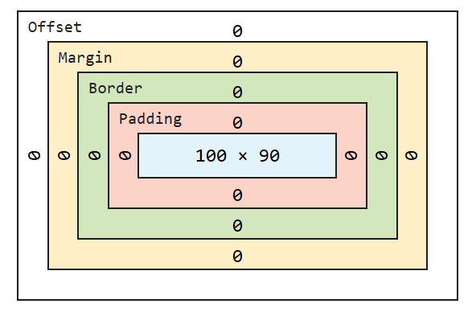
- Inherent size - this is the specified or inhereted size of the element or content
- Padding - While padding is drawn inside of an element's borders it adds to the overall size of the object.
- Border - Borders, when they have non-zero pixel size, add more to the size of the object.
- Margin - Margins are space added outside of borders
- Offset - The size outside of a border and inside of an outline.
All of these values summed up create the total size of each element when determining the page layout.
Note: In fixed layouts, many minor-layout issues are attributed to forgetting to take into account margins and padding in calculations.
Absolute and Fixed Layouts
One of the most straightforward way to layout objects on a page is through defining exact pixel values for size and position on the page.
#div1 {
background-color: magenta;
left: 20px;
}
#div2 {
background-color: cyan;
left: 60px;
}
#div3 {
background-color: yellow;
left: 100px;
}
div {
position: absolute;
top: 40px;
width: 20px;
height: 20px;
}
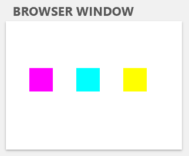
A fixed layout gives exact you control where stuff is
While this gives you the most direct control over the elements on the page, it doesn't always provide the ideal outcome as layouts can be cropped, clipped, or you may have too much empty space as the browser window size is changed.
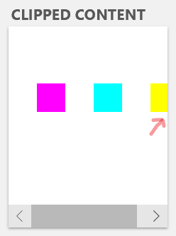
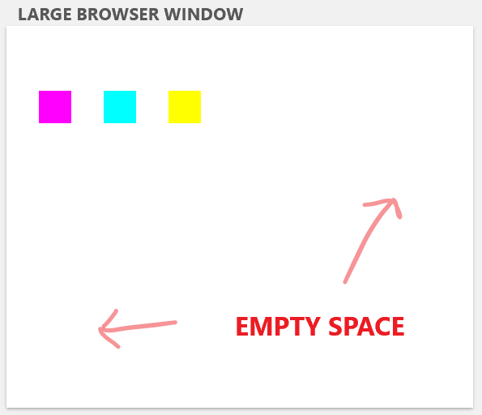

Relative Layouts
Building relative layouts and limiting the use of specific pixel values allows for a layout that adapts and responds to changes to changes in element and window sizes dynamic. While ultimately, some objects will have their size or margins defined,
Note: When building a relative layout, using percentages or fractional units, one of the parents in the hierarchy needs to have a size to be proportionate to. The window size is a good starting point, but it's a common mistake to accidentally have unsized (and ultimately undrawn) elements in relative layouts.
The most common approach to building a relative layout involves using percentages instead of pixel values.
#div1 {
background-color: magenta;
left: 15%
}
#div2 {
background-color: cyan;
left: 40%;
}
#div3 {
background-color: yellow;
left: 65%;
}
div {
position: absolute;
top: 40%;
width: 20%;
height: 20%;
}
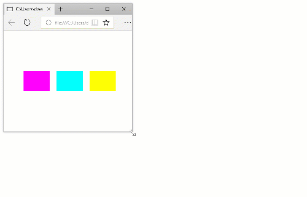
Responsive web design
While browsers have always been resizable, up until a few years ago, many websites were designed for a common desktop page resolution. Even as late as 2010, many websites were designed with mostly fixed layouts and optimized for a 1024x768 window size. The iPhone had been out and mainstream for a few years, but many developers who wanted to create a great website for the iPhone would create an entirely different website for their mobile websites.
Enter the responsive design movement, which encouraged sites that not only respond to window resize dynamically, but respond buy pulling in and adapting content on the page for different form factors and orientation.
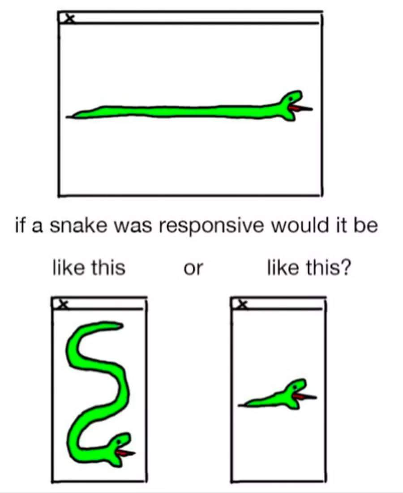
While many tools for building responsive layouts have long been supported by CSS, like percentages, there was limited support for building page, or site-wide layouts that responded and adapted screen size changes as big as changing from a desktop monitor to a mobile phone.
With the introduction of CSS3 a number of tools were introduced to aid this in modern browsers. First Flexbox gained broad support, and more recently Grid support has been added for most browsers.
Flexbox
The Flexible Box Layout (Flexbox) provides an easy way to layout, align and distribute space with a group of objects. There are tons of ways to align and justify content, but here's one example of how to distribute space between objects and center them, similar to our above example.
/* Set up the parent container as the flexbox */
body {
display: flex;
height: 100%;
width: 100%;
}
div {
margin: auto;
width: 60px;
height: 60px;
}
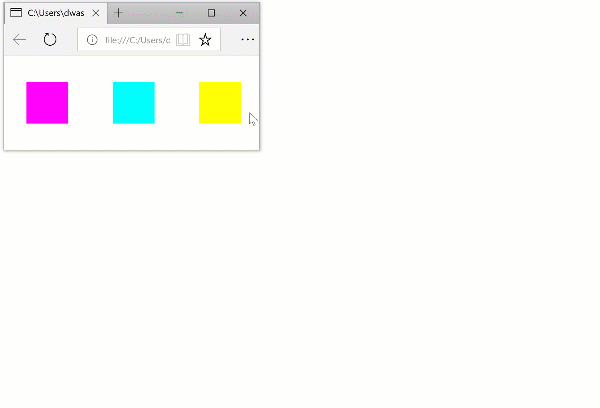
/* Align a flexbox vertically */
body {
display: flex;
flex-align: column;
height: 100%;
width: 100%;
}
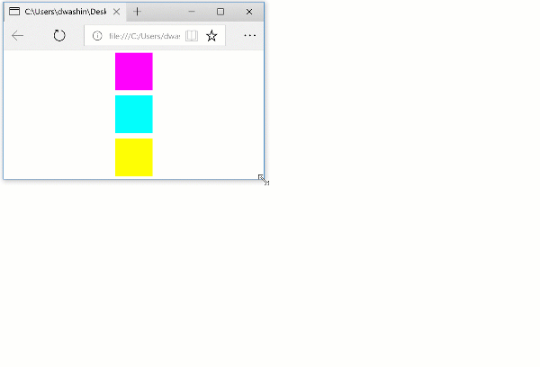
Grid
Grid is a layout construct that desktop app developers have been familiar with for a long time. Most app UI layouts are setup as a grid, with headers, toolbars, and panes. As the web became a replacement for many desktop apps, it makes sense that it would get a similar layout construct.
Grid allows you to set up rows and columns of different sizes, with some useful constructs for laying out rows and columns proportionally to the available space. One nice feature of both grid and flexbox is that they are source order independent, which means that that you can display content anywhere you want regardless of it's order in the DOM.
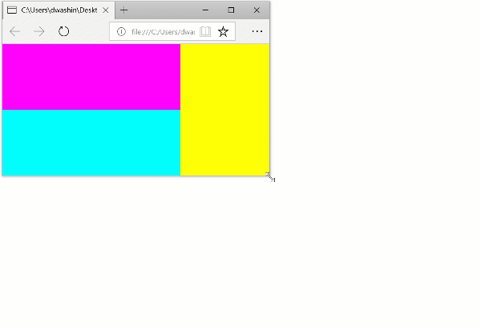
/* default.css */
.grid {
display: grid;
grid-template-columns: 2fr 1fr;
grid-template-rows: 1fr 1fr;
}
#div1 {
background-color: magenta;
grid-column: 1;
grid-row: 1;
}
#div2 {
background-color: cyan;
grid-column: 1;
grid-row: 2;
}
#div3 {
background-color: yellow;
grid-column: 2;
grid-row: 1 / span 2;
}
<!-- default.html -->
<div class="grid">
<div id="div1"></div>
<div id="div2"></div>
<div id="div3"></div>
</div>
Author's note: Most people think of grid as being new because it just gained support in Chrome. But my team on Windows was working with the W3C to get it added to the spec back in 2010, and IE11 shipped with support for it in 2011.
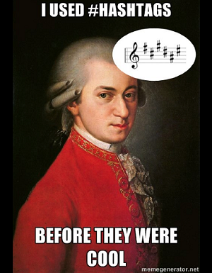
Media Queries
Usually when you're designing a website there becomes a point where your content doesn't fit nicely on screen anymore, even with sizing, and also there are some common sizes like for a mobile phone, or a portrait tablet that you want to support well. CSS Media Queries are your friend. They allow you to apply a separate set of styles for that new layout.
In this case, we use a screen media query to change the grid columns when the screen is portrait.
@media screen and (orientation: portrait) {
.grid {
grid-template-columns: 1fr ;
grid-template-rows: 1fr 1fr 2fr;
}
#div3 {
grid-column: 1;
grid-row: 3;
}
}
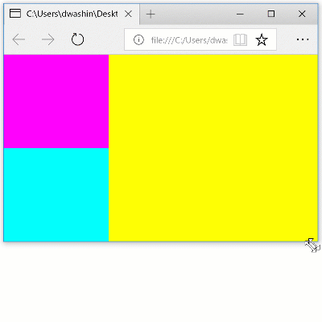
CSS Transforms
Transforms are a powerful tool to scale, move (translate), and rotate elements on the page.
- Modifications of objects after layout step
- Often CPU-independent by using GPU in modern browsers.
div {
transform: scale(2) translateY(20px) rotateZ(-60);
}
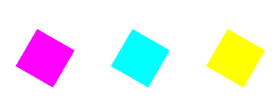
CSS Transitions
.defaultState {
transition: transform 2s ease-in-out 1s;
}
.defaultState.newState {
transform: scale(2) translateY(20px) rotateZ(-60);
}
Technical Challenge
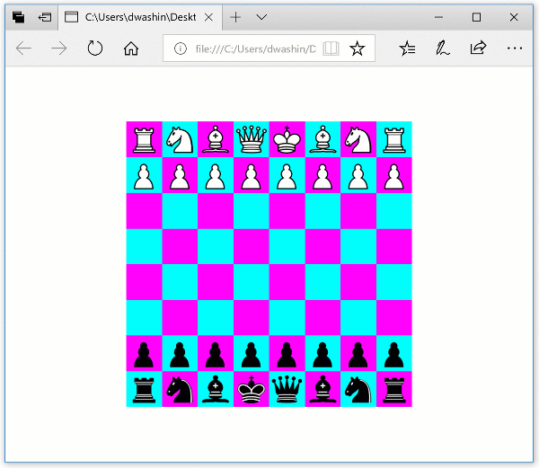